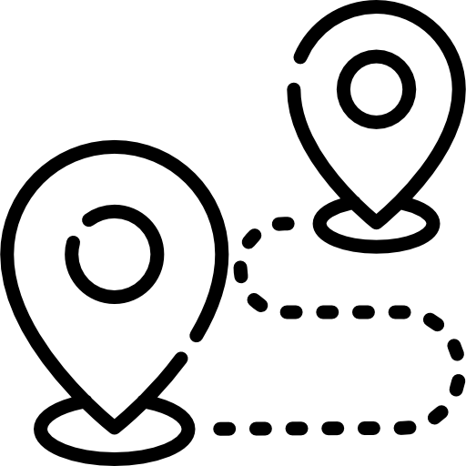

How to get there
Camarines Norte can be easily reached within 7 to 8 hours from Manila by bus. You can book a ticket in either Cubao or Pasay bus terminals. Bus campanies that can take you to Daet are: Philtranco, Superlines, DLTB and Amihan.
By plane you can book a 45 minutes flight to Naga, Camarines Sur via Pili Airport through Cebu Pacific or Philippine Airlines. From the airport you can ride a UV Express Van for 2 hours drive to Daet
How to get there
When you are in Daet, you can ride a commuter van, jeepney, or bus in getting around the beautiful spots in other municipalities of Camarines Norte. Tricyc are also abundant and can easily take you to nearby locations around Daet. Taxi is available in Daet. You can text or call OLA TAXI 0918-624-2924 / 0995-552-0633 for pick-up and reservations.

Where to stay
Hotels and lodging houses are abundant and conveniently located in Daet, and through the province. These are budget friendly and reasonably priced. For those who adventure seekers, you can always bring a tent and camp at nearby beach, falls or rivers, Private homes in various spots offer Homestay, for the most authentic experience of local culture and lifestyle.
